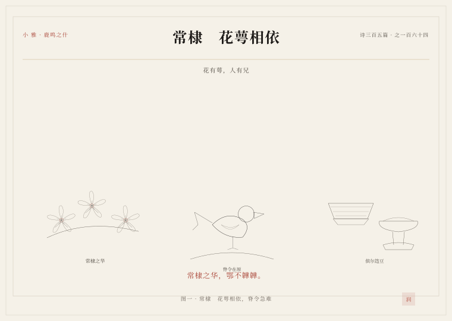
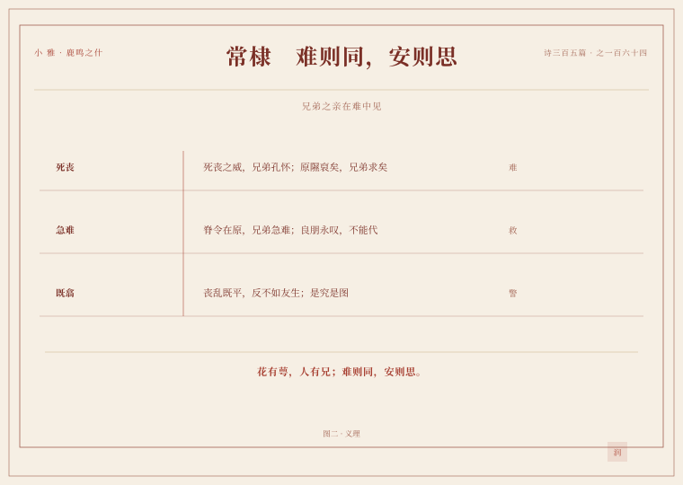

第一百六十四篇 常棣
小雅 · 鹿鸣之什 SJ164
朗读 · 普通话
依经文原文朗读，章次不读出；配古琴底乐，不改速、不加拖腔。全库同一音色（豆包 TTS），非播音员录制。
一 解题
诗三判：
- 谁在说：宴兄弟之人。见常棣之花，萼附相依；念死丧、急难、阋墙、御侮，终以「宜尔室家」收。
- 说什么事：八章。前五章以「凡今之人，莫如兄弟」为骨，写死丧、急难、外侮、丧乱；后三章写饮酒、妻子、室家，归於「是究是图」。
- 为何编在此：鹿鸣燕宾，常棣燕兄弟；宾以礼合，兄弟以天合。
小雅之始，先朋友，后兄弟，见「亲亲」之序。
《毛序》：「《常棣》，燕兄弟也。闵管蔡之失道，故作《常棣》焉。」
朱子《诗集传》：「兴也。常棣，郁李也。鄂，萼也。不，犹岂不也。韡韡，光明也。」二章：「威，畏。孔，甚。怀，思。裒，聚也。」三章：「脊令，雝渠也。况，滋也。」四章：「阋，斗很也。务，侮也。烝，众也。戎，相助也。」六章：「傧，陈。饫，餍。孺，亲慕也。」七章：「翕，合也。」八章：「帑，子。究，穷。图，谋。亶，信也。」
本库的看法：《常棣》不是一首泛说「兄弟好」的诗，是一首「兄弟之亲在难中见」的诗。
花萼相依，是形；死丧急难，是验；阋墙而外御其侮，是分寸。诗最深处在「丧乱既平，既安且宁；虽有兄弟，不如友生」：难时兄弟，安时朋友；不是兄弟不如友，是安时忘了兄弟。
末章「是究是图，亶其然乎」，是把这层道理重新究问一遍。须辨：常棣是郁李，不是海棠；鄂是萼，不是鄂国；不字是岂不，不是否定；务是侮，不是事务；戎是相助，不是兵戎。断语：花有萼，人有兄；难则同，安则思。
先辨五事：「常棣」是郁李，不是海棠；「鄂」是花萼，不是鄂国；「不」是岂不，不是否定；「务」是侮，不是事务；「戎」是相助，不是兵戎。
二 经文
第一章
常棣之华，鄂不韡韡。凡今之人，莫如兄弟。
第二章
死丧之威，兄弟孔怀。原隰裒矣，兄弟求矣。
第三章
脊令在原，兄弟急难。每有良朋，况也永叹。
第四章
兄弟阋于墙，外御其侮。每有良朋，烝也无戎。
第五章
丧乱既平，既安且宁。虽有兄弟，不如友生。
第六章
傧尔笾豆，饮酒之饫。兄弟既具，和乐且孺。
第七章
妻子好合，如鼓瑟琴。兄弟既翕，和乐且湛。
第八章
宜尔室家，乐尔妻帑。是究是图，亶其然乎。
三 韵读
- 一章：华、韡、弟，鱼、微交错。声明而亲。
- 二章：威、怀、裒、求，微、幽相叶。声悲而聚。
- 三章：原、难、叹，元部相叶。声急。
- 四章：墙、务、戎，阳、东相叶。声壮。
- 五章：平、宁、生，耕部相叶。声平而冷。
- 六章：豆、饫、具、孺，侯部相叶。声欢。
- 七章：合、琴、翕、湛，侵、缉相叶。声和而深。
- 八章：家、帑、图、乎，鱼部相叶。声长而问。
读法：八章分三段：一至四章「难」，五章一转「安」，六至八章「宴」。难处声促，安处声冷，宴处声和。
五章最冷，正是诗眼。
四 字义与名物
- 常棣：郁李，木名。鄂：花萼。不：岂不。韡韡：光明。凡今：如今。莫如：没有比得上。
- 威：畏。孔怀：非常思念。原隰：高平与低湿之地。裒：聚。求：寻找。
- 脊令：雝渠，水鸟。急难：救急。况：滋、益。永叹：长叹。
- 阋：斗很。墙：墙内。外御：抵御外侮。务：侮。烝：众。戎：相助。
- 友生：朋友。傧：陈设。笾豆：礼器。饫：饱、私宴。具：俱在。孺：亲慕。
- 好合：和睦。翕：合。湛：乐之久。宜：安。室家：家室。帑：子。究：穷究。图：谋。亶：信。
五 今译
一章：常棣的花，花萼相依，光明茂盛。如今的人，没有比兄弟更亲。
二章：死丧之可畏，兄弟最为思念。原隰之上聚拢，兄弟去寻找。
三章：脊令鸟在高原，兄弟急人之难。虽有良朋，也只是增加长叹。
四章：兄弟在墙内争斗，出外则共御外侮。虽有良朋，众多却无相助。
五章：丧乱已平，既安且宁。虽有兄弟，反不如朋友。
六章：陈设你的笾豆，饮酒饱足。兄弟都在，和乐而亲慕。
七章：妻子和睦，如鼓瑟琴。兄弟既合，和乐深长。
八章：安你的家室，乐你的妻儿。这道理要穷究，要谋虑，信然如此吧。
六 章旨
- 一章：花萼相依，是「天合」；凡今莫如，是「立骨」。
- 二章：死丧原隰，是「难」；兄弟求之，是「亲在难见」。
- 三章：脊令急难，是「救」；良朋永叹，是「友不能代」。
- 四章：阋墙御侮，是「内争而外同」；良朋无戎，是「众不能助」。
- 五章：丧乱既平，是「转」；兄弟不如友生，是「安时之忘」；诗眼在此。
- 六章：笾豆饮酒，是「合」；和乐且孺，是「亲」。
- 七章：妻子好合，是「家」；兄弟既翕，是「扩亲于家」。
- 八章：宜室家、乐妻帑，是「推」；究图亶然，是「问」。
七 诗教
- 兄弟之亲在难：死丧、急难、御侮，三处皆难；难时不弃，方称兄弟。
- 朋友不是替代：良朋可叹可助，不能代兄弟之亲；诗不贬友，只分其位。
- 安时最易忘：「不如友生」不是事实，是警语；安乐之时，正兄弟疏远之时。
- 亲亲而及家：末章由兄弟推及妻子室家；亲不推，则亲亦狭。
八 分寸与边界
- 不把「常棣」读成海棠：常棣是郁李；认错木，则「萼」无据。
- 不把「鄂不」读成鄂国与否：鄂是萼，不是国名；不是否定；读错，则「韡韡」失主。
- 不把「务」读成事务：务是侮；读成事，则「御侮」成办公。
- 不把「戎」读成兵戎：戎是相助；读成兵，则「无戎」成无兵。
- 不把「不如友生」读成结论：这是反语警句；读成结论，则全诗自相矛盾。
九 存疑
- 诗旨：毛序「闵管蔡之失道」，朱子「燕兄弟」。本库从燕兄弟，而存管蔡一义。
- 「鄂不」：毛传「鄂，拊也；不，岂不也」；朱子「鄂，萼也」。从朱子。
- 「裒」：毛传「聚也」；一说「裒，减」。从聚。
- 「戎」：毛传「相也」；朱子「相助」。从相助。
- 「帑」：毛传「子也」；一说「帛」。从子。
十 跨典
- 《论语》「兄弟怡怡」；此篇「和乐且孺」，正是怡怡之实。
- 《大学》「宜兄宜弟，而后可以教国人」；此篇「宜尔室家」，是齐家之始。
- 《孟子》「亲亲而仁民」；此篇由兄弟推妻子，是由亲及近。
十一 双卡与图
六对：
| 常棣（郁李） |
常棣（海棠） |
| 鄂（花萼） |
鄂（鄂国） |
| 不（岂不） |
不（否定） |
| 务（侮） |
务（事务） |
| 戎（相助） |
戎（兵戎） |
| 不如友生（警语） |
不如友生（结论） |

图一 · 常棣 花萼相依，脊令急难

图二 · 常棣 难则同，安则思